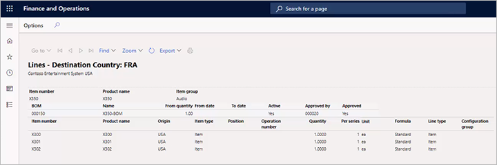

Ursprungsland
Important
Dynamics 365 for Finance and Operations hat sich zu speziell entwickelten Anwendungen entwickelt, mit denen Sie bestimmte Geschäftsfunktionen verwalten können. Weitere Informationen zu diesen Änderungen finden Sie im Dynamics 365-Lizenzierungshandbuch.
Important
Die hier aufgeführten Funktion sind alle oder teilweise im Rahmen einer Vorschauversion verfügbar. Inhalt und Funktionsweise unterliegen Änderungen. Weitere Informationen zu Vorschauversionen finden Sie in den FAQ zu Dienstupdates für One Version.
Viele Organisationen stellen ihren Lieferanten Zertifikate aus, um sicherzustellen, dass die Produkte bestimmten Zertifizierungsstandards entsprechen. Diese Zertifikate hängen häufig vom Herkunftsland ab. Mit der Herkunftslandfunktion können Sie ein Produkt mit seinem Herkunftsland verknüpfen und seine Produktzertifizierungen nachverfolgen.
Aktivieren der Herkunftslandfunktion
Bevor Sie diese Funktion nutzen können, muss sie auf Ihrem System aktiviert werden. Administratoren können mit den Einstellungen Funktionsverwaltung den Status der Funktion überprüfen und sie aktivieren. Im Arbeitsbereich Funktionsverwaltung ist die Funktion wie folgt aufgeführt:
- Modul: Produktinformationsverwaltung
- Funktionsname: Funktion zur Verwaltung des Herkunftslandes
Quell- und Zielländer konfigurieren
Bevor Sie ein Zertifikat für ein Produkt ausstellen, müssen Sie das Produkt mit seinem Zielland und seinem Herkunftsland verknüpfen.
Gehen Sie zu Produktinformationsverwaltung > Setup > Produktkonformität > Herkunftsland > Regeln für das Herkunftsland.
Wählen Sie ein vorhandenes Länder-Setup zum Bearbeiten aus oder wählen Sie Neu im Aktivitätsbereich aus, um ein neues Länder-Setup zu erstellen.
Legen Sie die folgenden Werte für das ausgewählte oder neue Land fest.
Feld Beschreibung Artikelnummer Wählen Sie die Artikelnummer des Produkts aus. Zielland Wählen Sie das Land aus, in das Sie das Produkt liefern. Ursprungsland Wählen Sie das Land aus, aus dem Sie das Produkt senden.
Mit diesem Setup können Sie einen Stücklistenbericht (BOM-Bericht) erstellen, in dem Sie das Herkunftsland für jedes Teil angeben können, für das Quell- und Zielländer angegeben sind. Dieser Bericht hilft Ihnen dabei, ein ganzheitliches Bild davon zu erhalten, woher Ihre Teile kommen und wohin sie gehen.
Lieferantenzertifikate nachverfolgen
Sie können die Seite Lieferantenzertifikate des Herkunftslandes verwenden, um Zertifikate nachzuverfolgen, die Sie an Lieferanten ausstellen.
Sie müssen entscheiden, welche Zertifikatdokumente Sie ausstellen und wie Sie sie den Kunden melden. Mit dieser Funktion können Sie Ihre Zertifikate besser nachverfolgen. Außerdem können Sie damit auswählen, ob die relevanten Zertifikatsnummern auf Rechnungen, Lieferscheinen und/oder Auftragsbestätigungen erscheinen.
Gehen Sie zum Einrichten Ihrer Zertifikatsinformationen folgendermaßen vor.
Gehen Sie zu Produktinformationsverwaltung > Setup > Produktkonformität > Herkunftsland > Kreditorenzertifikate des Herkunftslands.
Wählen Sie ein vorhandenes Zertifikat-Setup zum Bearbeiten aus oder wählen Sie Neu im Aktivitätsbereich aus, um ein neues Zertifikat-Setup zu erstellen.
Legen Sie die folgenden Einstellungen für das ausgewählte oder neue Zertifikat fest.
Feld Beschreibung Kreditorenkonto Wählen Sie den Lieferanten aus, an den Sie das Zertifikat ausgestellt haben. Artikelnummer Wählen Sie den Artikel aus, für den Sie das Zertifikat ausgestellt haben. Land/Region Das Zielland oder die Zielregion, in der Sie dieses Zertifikat verwenden müssen. Zertifikatnummer Geben Sie die Kennnummer des von Ihnen ausgestellten Zertifikats ein. In Kraft Wählen Sie das erste Datum aus, an dem das aktuelle Zertifikat gültig ist. Ablaufdatum Wählen Sie das letzte Datum aus, an dem das aktuelle Zertifikat gültig ist. Auf Rechnung drucken Aktivieren Sie dieses Kontrollkästchen, um die Zertifikatsnummer auf Rechnungen zu drucken, die im angegebenen Datumsbereich an das angegebene Land adressiert sind. Auf Lieferscheinen drucken Aktivieren Sie dieses Kontrollkästchen, um die Zertifikatsnummer auf Lieferscheine zu drucken, die im angegebenen Datumsbereich an das angegebene Land adressiert sind. Auf Auftrag drucken Aktivieren Sie dieses Kontrollkästchen, um die Zertifikatsnummer auf Aufträge zu drucken, die im angegebenen Datumsbereich an das angegebene Land adressiert sind.
Nehmen Sie das Herkunftsland in Stücklistenberichte auf
Wenn Sie einen Stücklistenbericht erstellen, können Sie das Herkunftsland für jeden Teil einbeziehen, für den Sie Quell- und Zielländer auf der Seite Regeln für das Herkunftsland angegeben haben.
- Wechseln Sie zu Produktinformationsverwaltung > Produkte > Freigegebene Produkte.
- Wählen Sie ein Produkt aus oder erstellen Sie es, um seine Seite Freigegebene Produktdetails zu öffnen.
- Wählen Sie im Aktivitätsbereich auf der Registerkarte Techniker in der Gruppe Stückliste die Option Designer aus.
- Wählen Sie auf der Seite, die angezeigt wird, im Aktivitätsbereich die Option Stückliste > Drucken aus.
- Legen Sie im Dialogfeld Stücklistenpositionen das Feld Zielland auf das Zielland fest, das Sie in Ihrem Bericht anzeigen möchten.
- Wählen Sie OK.
Ein Bericht mit Informationen zum Herkunftsland jedes Teils wird generiert und angezeigt. Hier ist ein Beispiel des Berichts.
